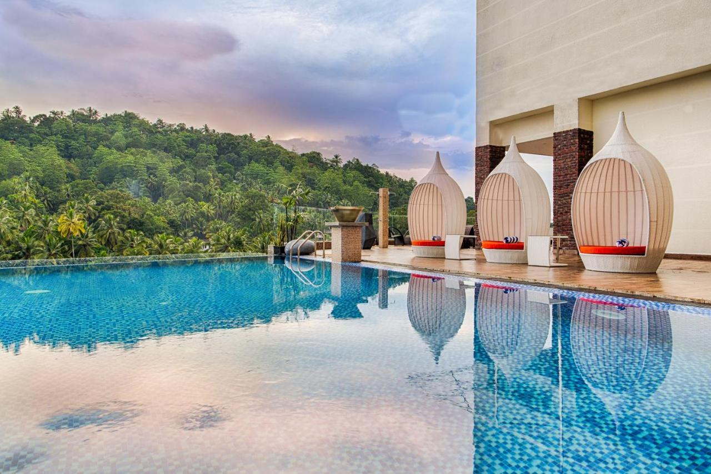

Kandy is Sri Lanka's second largest city after Colombo, brimming with a fascinating history, rich culture, spectacular beauty, and old-world charm. Lush forests, sprawling mountain ranges, the meandering Kandy Lake, known as the Sea of Milk, and an array of distinguished colonial building and magnificent Kandyan inspired architecture completes this Medieval City. This beautiful, laidback capital is only 72 miles (115 kilometres) inland yet boasts exceptional cultural and historical attractions, set amidst forested hills. Known as a pilgrimage destination for the Temple of the Tooth Relic (a sacred tooth of the Buddha), a listed UNESCO World Heritage Site, Kandy is a sacred city, due to the importance and spiritual significance of this temple. It is also known for the vibrantly festive Kandy Esala Perahera, also known as the Festival of the Tooth, an important 10-day religious celebration each August. Lying at an altitude of 1 640 feet (500 metres) above sea level and surrounded by the Knuckles and Hunnasgiriya Mountain Ranges, the temperatures around Kandy are slightly cooler and conditions more pleasant than in the lowlands. An important and established Buddhist site, Kandy was formerly known as the city of Senkadagalapura. It served as the last capital of the Sinhalese kingdom before falling to the British in 1815. Stroll amidst the stunning Botanical Gardens in Peradeniya and marvel at exquisite orchids ,Wind your way around three gorgeous temples including Embekke, Lankathilake and Gadaladeniya, and chat with the locals in fragrant tea stalls , View the Temple of the Sacred Tooth Relic (a sacred tooth of the Buddha), ara some amazing palces you should not miss in Kandy.
Located 500 metres above sea level, Cinnamon Citadel Kandy offers a spectacular outdoor pool. It offers well-appointed air-conditioned rooms featuring spacious interiors with fine bedding and furnishing. Each room is equipped with a minibar, tea/coffee making facilities and a TV with cable channels.
Panorama Restaurant boasts an international menu, and continental dishes can be found at the Cafe C. The Lounge is an excellent venue to enjoy refreshing beverages and light snacks.
Guests can enjoy a leisurely swim at the outdoor pool. Free Wi-Fi is provided on site. The hotel’s tour desk can help organise trips to popular attractions such as the Pinnawala Elephant Orphanage.
Cinnamon Citadel Kandy is located a 20-minute drive from the famous Sacred Tooth Relic of Lord Buddha site. Bandaranaike International Airport is a 5-hour drive from the hotel, and free parking is provided.

Golden Crown
The Golden Crown Hotel is a 5-star hotel located in Ampitya, Kandy, Srilanka. Set amidst lush paddy fields surrounded by lush greens, the property is just 10-minute drive away from the famous Temple of the Tooth Relic.
Every room at this hotel is air conditioned and comes with a flat-screen satellite TV. Some rooms have a seating area for your convenience. You will find a kettle and minibar in the room. Each room is equipped with a private bathroom with a bidet and shower, with bathrobes, slippers and free toiletries provided.
Property features a swimming pool along with the INFINITY pool bar on the 2nd floor with a picturesque view where the guests can relax sipping an exotic drink from our swim-up bar. The property offers three restaurants: BRIX, a contemporary Irish type restaurant; THE LONG BAR, a welcoming venue resembling an Irish Pub; and TREATS, for breakfast, lunch or late night snack. Situated on the top floor is LAVO, an upscale night club.
Refreshing workouts can be enjoyed at the fitness centre. The spa offers a range of treatments. Complimentary parking is available on site.